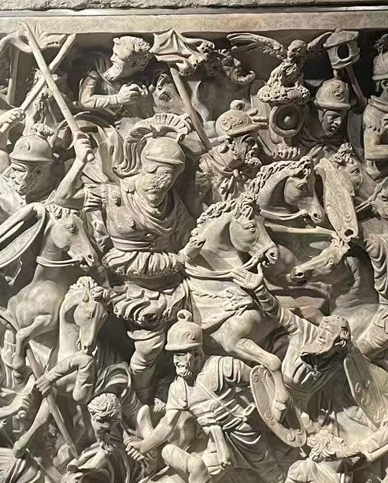
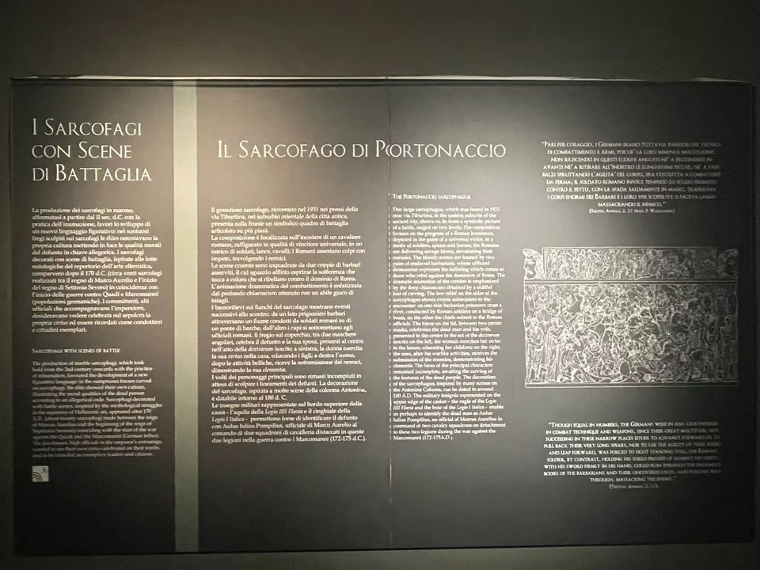
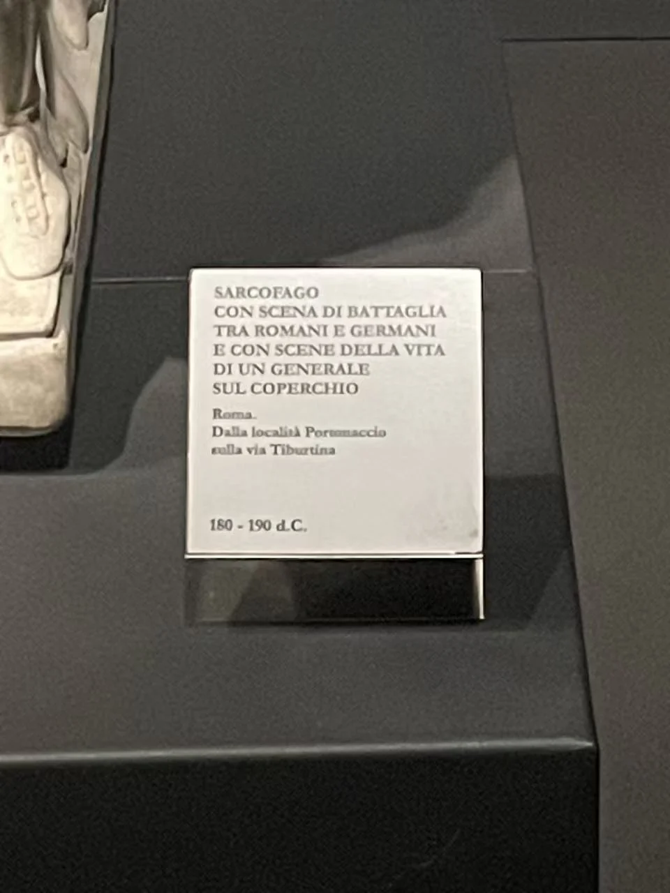

ROMAN SARCOPHAGI / R11
波尔托纳乔战争石棺
先看奔马、长矛与相互倾压的身体，再找中央骑手尚未完成的面容。整面浮雕把战争压得如此紧密，主角的脸却留有一块没有被刻定的空间。

- 年代
- 180—190年
- 材料
- 大理石
- 收藏
- 罗马国家博物馆
- 观看地点
- 罗马国家博物馆·马西莫宫 · 罗马
- 馆藏号
- 112327
胜者与败者，占据不同的位置
中央骑手高出周围人物，马首与交错的长矛把目光引向他。下方的身体则倾倒、扭转，甚至被马腿和盾牌遮住。两端站立的俘虏相对安静，像是为躁动的战场收住边框。这里的高低、正侧与动静，已经在区分胜者与败者。
深凿的间隙留下浓重阴影，使近处的手臂与后方人马层层分开。站远一点看，战场几乎是一片翻卷的石浪；放大之后，才重新认出每一张脸、每一面盾，以及被其他身体打断的姿势。


一张没有刻成肖像的脸
中央主角的面容未完成，上方棺盖若干主要人物也保留相近状态。Zahra Newby讨论这件石棺时，将这种为墓主预留的肖像，与理想化的将军形象联系起来：死者可以借胜利统帅的身体呈现自己的勇武，画面却不必是他某次战役的实录。 [15]
未完成不等于毁损。它让人看见肖像与故事可以分阶段制作，也让本来应当明确的个人身份停在半途。究竟为何没有完成、墓主到底是谁，目前仍不足以确定。 [15] [16]
棺盖把战场接回人生
上方窄长棺盖的叙事节奏更舒缓：人物成组站立，衣纹与手势替代了棺身的冲撞。Elena Calandra的馆藏图录说明把这些场景联系到诞生、教育、婚姻与宽赦。这样的安排，把武勇与家庭、修养及待人之德放进同一份身后形象。 [16]
因此，最值得并看的不是两场相似战斗，而是同一石棺上的两种记忆：棺身让中央人物成为胜者，棺盖则给他一个可以被社会辨认的人生轮廓。
波尔托纳乔的发现
这件石棺1931年在罗马波尔托纳乔一带、Via delle Cave di Pietralata附近发现，现藏马西莫宫，编号112327。现场小展签定为180—190年。它与阿尔滕普斯宫的大卢多维西战争石棺是不同作品。 [16] [15]
从另一个角度看

现场展签 · 2张

